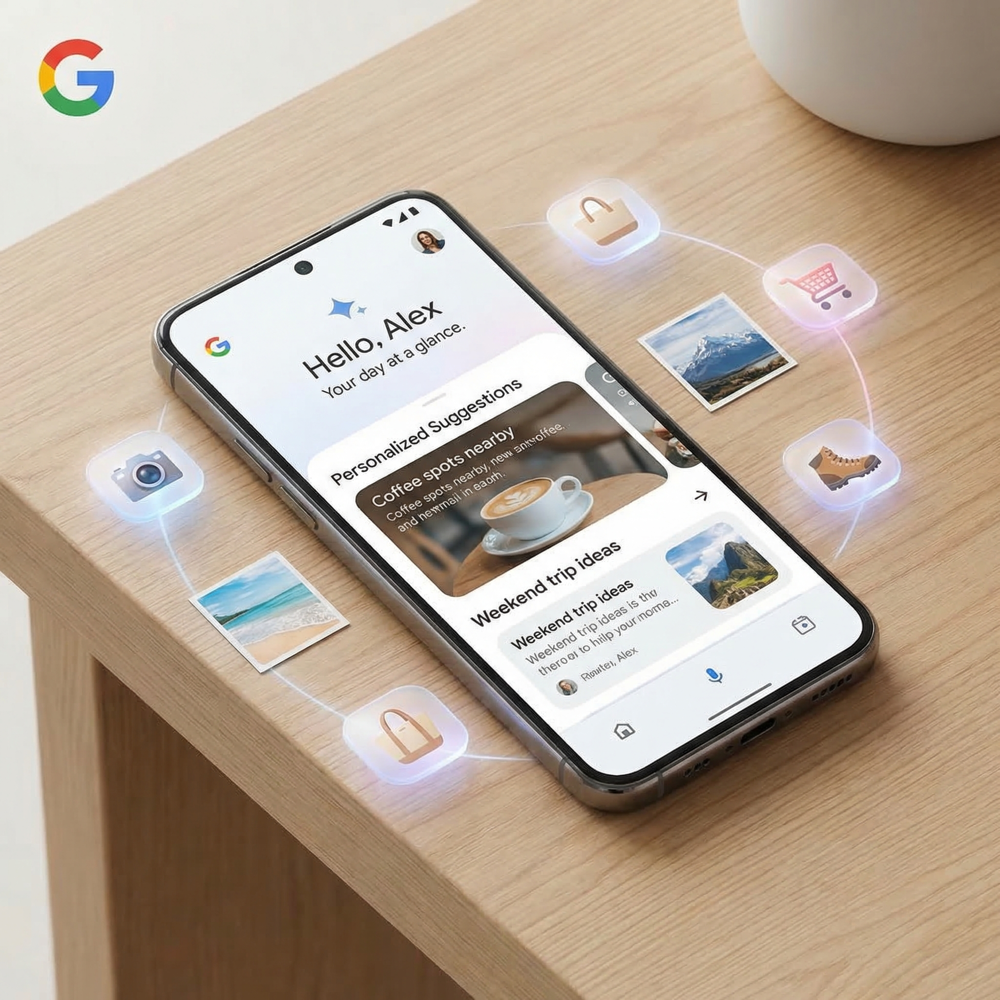

Google's "Personal Intelligence" is now live for all free Gemini users in the United States, and it's about to change how you interact with your digital life. Announced March 17, 2026, this feature connects your Gmail, Google Photos, and other Google services to deliver personalized AI responses across Search, the Gemini app, and Chrome.
What Personal Intelligence Actually Does
The system pulls information from your connected Google services to provide contextually aware responses. Traveling soon? It can scan your Photos for location data and suggest itineraries based on where you've been. Shopping? It can parse your Gmail receipts and recommend products based on your purchase history.
This isn't just another AI feature—it's Google leveraging the decade-plus of data you've trusted them with to make their AI actually personal.
Key Capabilities
- Travel Suggestions: Analyzes photo metadata and Gmail reservations to recommend trips based on your past destinations.
- Shopping Recommendations: Reviews email receipts and browsing patterns to suggest relevant products.
- Cross-Platform Integration: Works across Google Search, Gemini app, and Chrome browser.
- Workspace Integration: Available for personal Google Workspace accounts (business/enterprise excluded).

Privacy: Off by Default, Opt-In Only
Google is being careful here. Personal Intelligence is opt-in and turned off by default. Users must explicitly enable it and can choose which services to connect. The company states that content processed through Personal Intelligence is not used to train their AI models—a crucial distinction for privacy-conscious users.
Full user control means you can disconnect services at any time or disable the feature entirely. Google appears to have learned from past privacy missteps.
Rollout Timeline
This isn't a sudden launch. The feature entered beta for paid Gemini subscribers in January 2026, giving Google two months to refine the experience before opening it to all 400 million+ free users in the US. International expansion is expected but Google hasn't announced specific timelines.
The Bigger Picture
This represents Google's most aggressive move yet to differentiate Gemini from competitors like ChatGPT and Claude. While others can process documents you upload, Google can access years of your email history, photo libraries, and calendar data—if you let it.
The question for users: is the convenience worth the deeper integration? Google is betting yes—and making sure you have to explicitly say so.
Key Takeaway
Google's Personal Intelligence transforms your existing Google data into actionable AI insights. It's optional, privacy-focused, and potentially the most useful AI feature the company has shipped—but only if you're comfortable with deeper data integration.